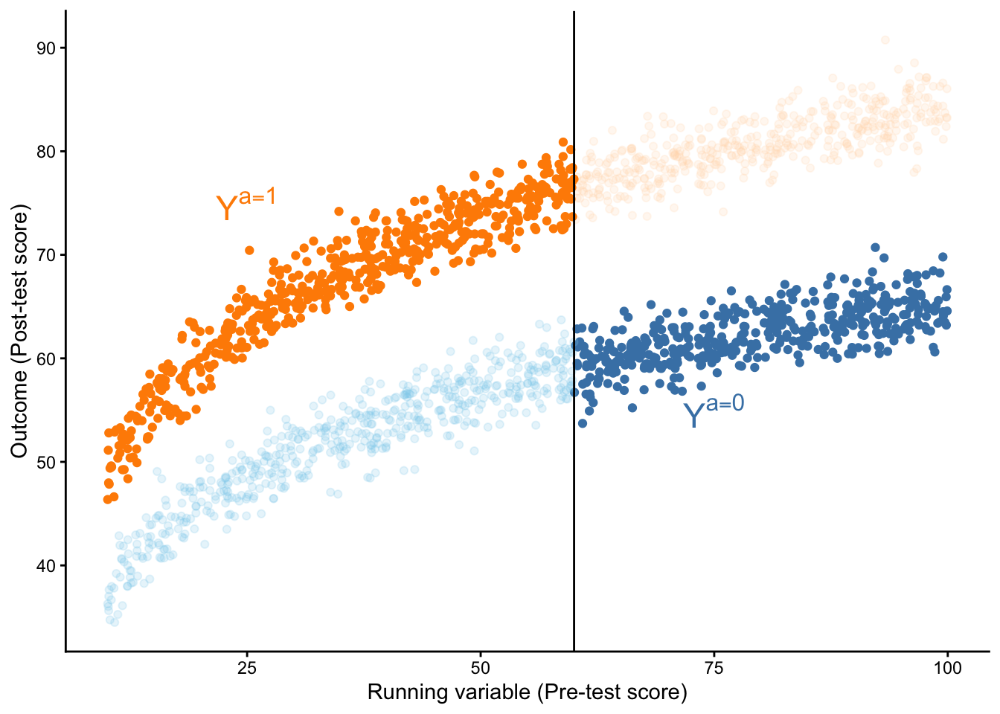

10 Regression Discontinuity Designs
You can download a template file for this activity here.
Small Group Discussion
Prompt 1
Suppose Macalester’s Sustainability office did a study of the impact of the green-to-go containers on students’ perception of sustainability efforts at the college. They did a matching analysis and found that on average, students who used the containers were 70% more likely to have a more positive perception of college sustainability efforts than they would have had they not used the containers.
- What causal effect is this? (ATE, ATT, or ATC)
- What steps should Mac’s Sustainability office have taken before conducting matching?
A critic comes in and says “The containers don’t do anything for students’ perceptions! It’s because you didn’t account for prior engagement in sustainability efforts!”
- What role would calculating an E-value or undertaking a simulation-based quantitative bias analysis play here?
Suppose we calculated an E-value of 4.
- Interpret this E-value by explaining what it says about the associations between the unmeasured confounder, treatment, and outcome?
- How could you investigate whether this E-value is high or low?
- How would we put all of these results together to assess the robustness of the estimated causal effect?
Prompt 2
Suppose we are studying the effect of a tutoring program on reading scores on the state’s standardized test. 3rd graders take a pre-test and all 3rd graders who score below a 50% on the test are required to enroll in the tutoring program. No one with scores above 50% enroll.
- Draw a plot of how you would expect pre-test scores to relate to scores on the standardized test (in the absence of the tutoring program).
- Update your plot to show what might happen if the tutoring program has a beneficial impact. Label the estimated causal impact on your plot.
Discussion
Big idea
- Cutoff on a continuous variable assigns units to treatment vs. control.
- Called the running or forcing variable and often denoted as \(X\)
- Are units just above the cutoff vs. just below really all that different?
- Probably not, and that’s helpful to us!
- Those just above the cutoff are good guesses for the counterfactual outcome for those just below, and vice versa.
Examples
- Elections: Cutoff at 50% determines party in governance within a geographical unit
- Variety of social, political, and economic outcomes of interest
- Are districts with 50.1% of votes for Democrats really different from those with 49.9%?
- The former are definitely governed by Democrats, and the latter are not.
- Environmental exposures: Thresholds define “high” levels of exposure
- Radon test when buying a home: if measured radon exceeds 4 pCi/L (picocuries/liter), seller is more likely to pay for a radon mitigation system as part of closing the deal.
- Are homes with 4 pCi/L really different from those with 3.9 pCi/L?
- The former are more likely to have a radon mitigation system.
Hilton Boon et al (2021) provide an overview of forcing variables that are commonly used in health studies—take (see Table 1).
Sharp vs. fuzzy RDDs
- Scenario 1: Districts with over 50% of votes for a candidate are wholly governed by that candidate.
- Scenario 2: Homes with over 4 pCi/L of radon don’t always get a radon mitigation system.
- Scenario 1 is a sharp RDD because the probability of treatment goes from 0 to 1 at the cutoff.
- Scenario 2 is a fuzzy RDD because the probability of treatment changes sharply at the cutoff but not necessarily from 0 to 1.

The distinction between sharp and fuzzy designs matter because in fuzzy designs, the cutoff causes a smaller change in the proportion of units treated, so any changes we see in the outcome at the cutoff need to take that into account.
We’ll focus on sharp RDDs for now. We’ll revisit fuzzy RDDs after we talk about instrumental variables.
Continuity assumption
The continuity assumption is the identification assumption underlying RDDs.
It says that the potential outcomes as functions of the running variable \(X\) are continuous.
This allows us to identify the treatment effect as the size of the discontinuity at the cutoff. Notably, this means that our estimand is a local average treatment effect. It is a treatment effect (expected difference in potential outcomes only for units close to the cutoff).
Analyzing an RDD: overview
- Determine if the RDD is sharp or fuzzy
- Assess potential manipulation of the running variable (via context and inspecting the data)
- Estimate treatment effect
- Placebo tests
Analysis
First install required packages by entering install.packages(c("rdrobust", "rddensity", "haven")) in the Console.
Data context
Hansen, Benjamin. 2015. “Punishment and Deterrence: Evidence from Drunk Driving.” American Economic Review, 105 (4): 1581–1617. Link.
This paper offers quasi-experimental evidence concerning the effects that punishment severity has on the commission of future crimes. Taking advantage of administrative records on 512,964 DUI stops from the state of Washington (WA), I exploit discrete thresholds that determine both the current as well as potential future punishments for drunk drivers. Specifically, in WA [blood alcohol content] (BAC) measured above 0.08 is considered a DUI while a BAC above 0.15 is considered an aggravated DUI, or a DUI that results in higher fines, increased jail time, and a longer license suspension period. Importantly, the statutory future penalties increase for each DUI received, regardless of whether the previous offense was an ordinary DUI or aggravated DUI. The quantifiable nature of BAC, use of thresholds to determine punishment severity, and the inability of either drivers or police to manipulate BAC allows for a unique quasi-experiment to test whether the harsher punishments and sanctions offenders experience at the BAC thresholds are effective in reducing drunk driving.
Read in data
library(tidyverse)
library(rdrobust)
library(rddensity)
dwi <- haven::read_dta("https://github.com/scunning1975/causal-inference-class/raw/master/hansen_dwi.dta")
dwi <- dwi %>%
select(-c(Alcohol1, Alcohol2, bac2)) %>%
rename(bac = bac1)Codebook
recidivism: Outcome (1 if the unit committed an offense after the breathalyzer, 0 otherwise)bac: Blood alcohol content (running/forcing variable)low_score: portable breath test (PBT) valuemale: Indicator of male sexwhite: Indicator of white raceacc: Indicator of an accident at the sceneaged: Age in years
We create a treatment variable called dui that equals 1 if bac >= 0.08 and 0 otherwise. For convenience, we also create a centered version of bac (centered at 0.08) so that values greater than 0 indicate being above the DUI cutoff.
dwi <- dwi %>%
mutate(
dui = bac >= 0.08,
bac_centered = bac - 0.08
)Step 1: Sharp or fuzzy?
The treatment of interest in our study is being subject to a DUI law (fines, jail time, and a period of driver’s license suspension if DUI is above 0.08). We want to understand the impact of this punishment on the chance of repeat offenses (recidivism).
Question: Is this a sharp or fuzzy RD design and why?
Step 2: Assess potential manipulation of the running variable
Via context
The study needs to describe how the values of the running variable were determined (often called a scoring process) and how treatment was assigned based on the values of the running variable. This description should include:
- What running variable was used? Who determined values of the running variables? (e.g., Who scored a test?)
- What cutoff value was selected? Who selected the cutoff?
- When was the cutoff selected relative to when the values of the running variable were determined?
Via plots
First make a histogram. Default bin settings (binwidth, # of bins) might not always be what you want.
set.seed(451)
x <- rnorm(1000, 0, 1) # Generate 1000 values from a std. normal distribution
x[x > 0] <- x[x > 0] + 0.05 # Shift the positive x's up by 0.05 to create a discontinuity in the density
sim_data <- tibble(
x_discont = round(x, 3)
)
ggplot(sim_data, aes(x = x_discont)) +
geom_histogram() +
labs(title = "Default binwidth (30 bins)") +
theme_classic()
ggplot(sim_data, aes(x = x_discont)) +
geom_histogram(bins = nrow(sim_data)/10) +
labs(title = "~10 cases per bin") +
theme_classic()Via tests
The rddensity() functions tests for possible manipulation by testing the null hypothesis that the density of the running variable is smooth (continuous). Rejecting the null hypothesis makes the claim that there was some sort of discontinuity (possible manipulation) in the running variable.
The key arguments are:
X: the running variable (in vector form)c: the cutoff on the running variablefitselect: how the density of X should be estimated. Let’s look at the documentation page by entering?rddensityin the Console.
rddens_res_unrestricted <- rddensity(X = sim_data$x_discont, c = 0, fitselect = "unrestricted")
summary(rddens_res_unrestricted)
rddens_res_restricted <- rddensity(X = sim_data$x_discont, c = 0, fitselect = "restricted")
summary(rddens_res_restricted)The top part of the output tells us how the command was run. In the second part of the output, we want to pay attention to the “Number of obs” and “Eff. Number of obs”, which give the sample size and effective sample size (after considering units with duplicate X values).
The third part of the output is the test statistic and p-value.
The fourth part of the output (p-values from binomial test) is one that we would generally ignore because it claims that if there is no manipulation, the proportions of cases in small windows above and below the cutoff should be 0.5, which won’t be true for curved distributions that are indeed continuous.
We cam use a simulation study to better understand the difference between fitselect = "unrestricted" and fitselect = "restricted":
set.seed(451)
system.time({
fitselect_sim_results <- purrr::map(1:1000, function(i) {
x <- rnorm(1000, 0, 1)
x[x > 0] <- x[x > 0] + 0.05
sim_data <- tibble(
x_discont = round(x, 3),
x_cont = rnorm(1000, 0, 1) %>% round(3)
)
res_discont_unrestricted <- rddensity(X = sim_data$x_discont, c = 0, fitselect = "unrestricted")
res_cont_unrestricted <- rddensity(X = sim_data$x_cont, c = 0, fitselect = "unrestricted")
res_discont_restricted <- rddensity(X = sim_data$x_discont, c = 0, fitselect = "restricted")
res_cont_restricted <- rddensity(X = sim_data$x_cont, c = 0, fitselect = "restricted")
tibble(
pval = c(res_discont_unrestricted$test$p_jk, res_cont_unrestricted$test$p_jk, res_discont_restricted$test$p_jk, res_cont_restricted$test$p_jk),
fitselect = rep(c("unrestricted", "restricted"), each = 2),
type = rep(c("Discontinuous in X", "Continuous in X"), 2)
)
}) |> bind_rows()
})
ggplot(fitselect_sim_results, aes(x = fitselect, y = pval)) +
geom_boxplot() +
facet_grid(~type) +
theme_classic()
fitselect_sim_results %>%
group_by(fitselect, type) %>%
count(pval < 0.05)We don’t see much of a difference between the two fitselect options in the left panel (when there is no manipulation).
We see that in the “Discontinuous in X” panel, the “restricted” option results in lower p-values, which translates to better power to detect manipulation when it exists.
Application to the DWI data
Exercise: Evaluate potential manipulation of the running variable in the DWI study using (1) data context, (2) plots, and (3) statistical testing.
Step 3: Estimate treatment effect
Get a sense of the treatment effect with a plot
Exercise: Make a plot that shows the trend in our outcome (recidivism) as a function of our running variable (bac_centered) both before and after the cutoff. Is there a clear discontinuity?
Global model
To get a sense for things, we can first fit a global model using all of our data. This is a reasonable main model to fit if the RDD plot above (Y vs running variable) shows linear relationships before and after the cutoff.
Note that when fitting a global model the importance of correct functional form becomes quite important:

In our DWI study, let’s fit the following model:
\[ E[\text{recidivism} \mid \text{BAC, DUI}] = \beta_0 + \beta_1 (BAC-0.08) + \beta_2 DUI + \beta_3 DUI (BAC-0.08) \]
lm(recidivism ~ bac_centered*dui, data = dwi) |>
summary()Exercise: What coefficient corresponds to our estimate of the treatment effect? How can we interpret this treatment effect? Also make sure that you know what the other coefficients represent.
Local model
If we’re not confident that a global model is a good fit for our data, we can focus on just modeling the small region near the cutoff.
An ad-hoc way to do this would be to use the same process as with our global model but filter our cases down to a small window about the cutoff:
lm(recidivism ~ bac_centered*dui,
data = dwi |> filter(abs(bac_centered) < 0.05)) |>
summary()A better alternative is to use the rdrobust which chooses the bandwidth (window size around the cutoff) for us, implements local regression, and provides us standard error estimates that account for unequal variance (heteroskedasticity) and adjust for bias in standard error estimation:
rd_all_data <- rdrobust(y = dwi$recidivism, x = dwi$bac_centered, c = 0)
summary(rd_all_data)Step 4: Placebo tests
A placebo test is a test for which we expect to not reject the null hypothesis.
If the theoretical underlying causal graph for RDD is true, then RDD is like a randomized experiment near the cutoff on the running variable. We can run identical RDD analyses except replacing our outcome with covariates that we expect to be balanced around the cutoff:
Exercise: Summarize your finding from the following placebo tests.
rdrobust(y = dwi$male, x = dwi$bac_centered, c = 0) |> summary()
rdrobust(y = dwi$white, x = dwi$bac_centered, c = 0) |> summary()
rdrobust(y = dwi$acc, x = dwi$bac_centered, c = 0) |> summary()
rdrobust(y = dwi$aged, x = dwi$bac_centered, c = 0) |> summary()Synthesis
- If you were to explain the RD design in a capstone presentation, what slides would you create, and what would you plan to say on each slide?
- Why do we need different methods for sharp and fuzzy RD designs?
- Why is it important to assess potential manipulation of the running variable?
- How do we interpret the treatment effect from RDD? What are the strengths and limitations of this?
- Why is it important to conduct placebo tests in an RDD?